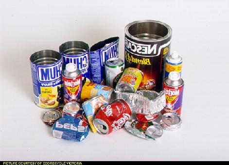

Final Homework-like Assignment
Toward a Quantitative Mathematical Human Ecology of
Soup Cans

Image from the Image
Library at the Ecocycle Victoria
website. Victoria is in Australia. You can tell since the
text in the image appears backwards. Conversely, our text appears
backwards to people in the Southern Hemisphere. This is somehow
related to the Coriolis
effect.
Due Friday 11 March 2005
- Cylindrical soup cans are to be made to hold a fixed volume V.
To save resources, you need would like to design a can that will hold
V, but will use the least metal. What is the ratio of the radius to
the height for the can that uses the least metal?
- Cylindrical soup cans are to be manufactured to hold a fixed volume V.
There is no waste in cutting the metal for the sides of the can, but
the circular endpieces will be cut from a square, with the corners
wasted. Find the ratio of the radius to the height for the most
economical can. Is your answer bigger or smaller than your answer for
part 1? Explain.
- Suppose that you don't need to worry about the wasted corners any
more; you've convinced the plant operators that you should save the
corners and remelt them and use them again. So they're not really
wasted. However, your engineers tell you that for better stability,
you'll need make the top and the bottom of the cylinder three times as
thick as the sides. Find the ratio of the radius to the height for
the can that uses the least material. Is your answer bigger or
smaller than your answer for part 1? Explain.
- Suppose you want to break with tradition and make your soup cans
box-shaped instead of cylindrical. Consider a box with a square ends
of side s and a length of L. Find the ratio of s to L for the box
that holds a fixed volume V but uses the least material.
- How much material does the box in problem 4 use? How much
material does the cylinder from problem 1 use? You should find that
the box uses less material. Given this, why aren't soup cans
typically shaped like boxes?
- You now need to build a structure to hold your soup cans before
the truck comes to take them to natural food stores and co-ops. Not
having taken any architecture classes, you decide on a very simple
design: a large piece of metal folded down the middle to form a long
V. This V will then form a long triangular shelter for your soup
cans. (To visualize this shape, take a piece of paper and fold it in
half. Unfold it and stand it up on its ends.) How should you fold
the metal so that your shelter will be able to hold the most soup
cans? I.e., you want to maximize the volume of the building. Assume
that the length of your metal before folding is L and the width is W.
(Hint: There are many ways to solve this problem. I think the
easiest is to express the volume of the structure in terms of the
angle of folding. Then take the derivative of V with respect to this
angle and minimize.)
- Bonus: Now suppose that the soup can material costs C1 per
square centimeter. Also, assume a cost C2 per centimeter of "seam"
along the top and bottom of the cylindrical can. Find the ratio of
the radius to the height for the least expensive can. It's relatively
straightforward to get the derivative of the cost. The hard part is
finding the r that makes the derivative equal to zero. When I did it
I ended up with a cubic equation which I had to give to Maple to
solve.
|